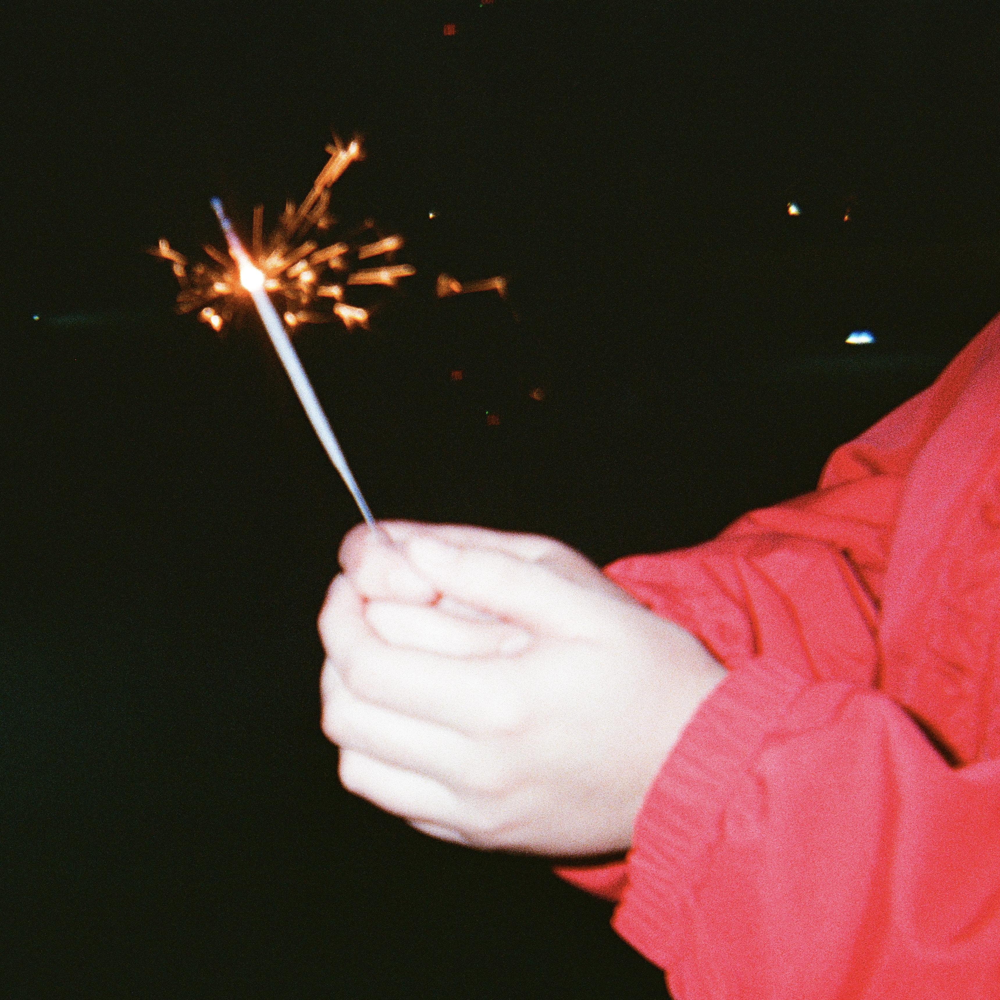

All tracks written and composed by Daniela Hernandez, Elijah Wilson, and Justin Rollins.
All tracks produced by Elijah Wilson and Justin Rollins.
Daniela Hernandez: Vocals (all tracks), lyrics (all tracks).
Elijah Wilson: Guitar (all tracks), programming (1), backing vocals (1).
Justin Rollins: Synthesizer (all tracks), programming (all tracks), kalimba (2), lyrics (2, 4).
Photography by Justin Rollins.
Released February 14, 2025.
Seven Months
Talk to me
Why are you leaving
You and I
Are forever fleeting
I think the heat's getting to me
Start to replay all of our memories
I feel the heat's getting to me
Nostalgia eats me up
Up
It's been seven months
Since your mind has been made up
See you in supercuts
The floor keeps rising up
You start resenting me
For all I ever was
Nostalgia eats me up
Up
Up
Talk to me
Why are you leaving
You and I
Are forever fleeting
Talk to me
Why are you leaving
***
Door
Have you made up your mind yet
Falling into you
I'll do whatever you want to
Promise we'll stay the same
Do whatever it takes
Come up with whatever to say
Would you wanna hear
Can you feel it
Standing at the edge of the door
Can you hold it there
We found it
But baby could you go
Without it
And if you wanna know
About me
Then drink it all
Surround me
Can you feel it
Standing at the edge of the door
Can you feel it
Can you hold it there
We found it
But baby could you go
Without it
And if you wanna know
About me
Then drink it all
Surround me
***
Heartswings
It's killing me
When you walked into the room
It's eating me
The way I want it to be you
Empty conversations to hold onto you
Tell me can you read me
The way I see straight through you
In love with potential
Look past the noise
Do I really love you
Don't have a choice
It's killing me
When you walked into the room
It's eating me
The way I wanted it to be you
In love with potential
Drown out the noise
Pull down my skirt
And tell me I'm pretty
You're touching other girls
Your beat up sneakers
Beside her bed
You live in my head
Bare and boned
Strip me down
Tell me all the things
You don't talk about
It's killing me
When you walked into the room
It's eating me
Her hands all over you
Its killing me
I'm passing all the signs
I'm passing all the lights
In love with potential
With stars in my eyes
In love with potential
Drown out the noise
It's killing me
It's killing me
***
Genius
You're sleeping in again
Hope that it was me that you were dreaming
I'll wait for you
If you meet me at the crossroads I'm torn between too
Gripping
A little harder onto you
Scared of losing myself
Like I always do
It's you all l've been waiting for
Tell me what you've been waiting for
You're a genius in my eyes
Obsessed with every part of you
Don't you wanna be mine, mine
Let me in your mind, mind
***